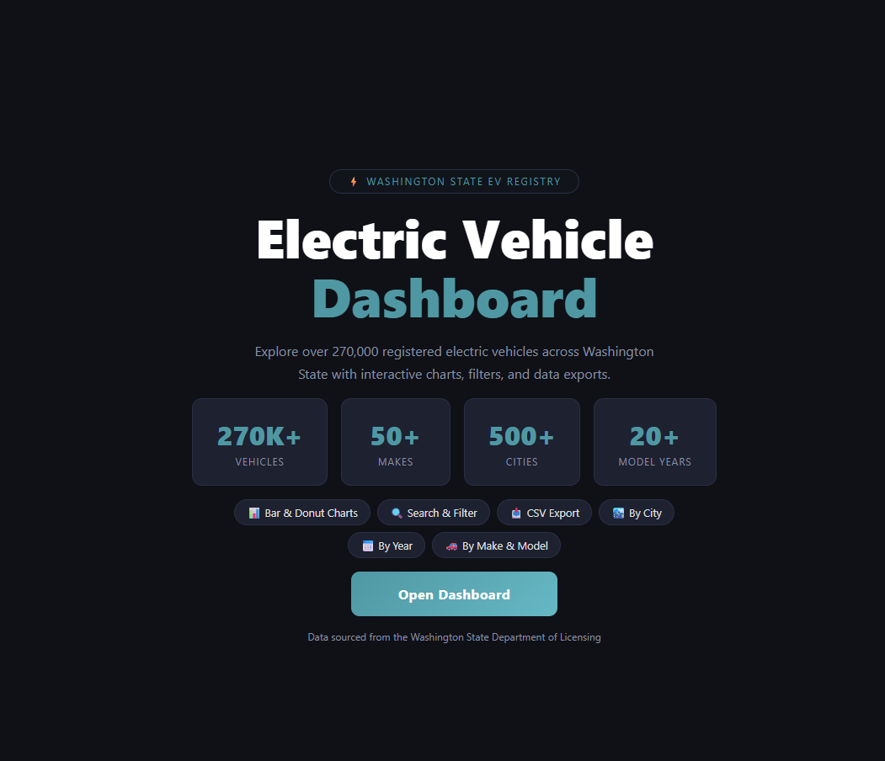
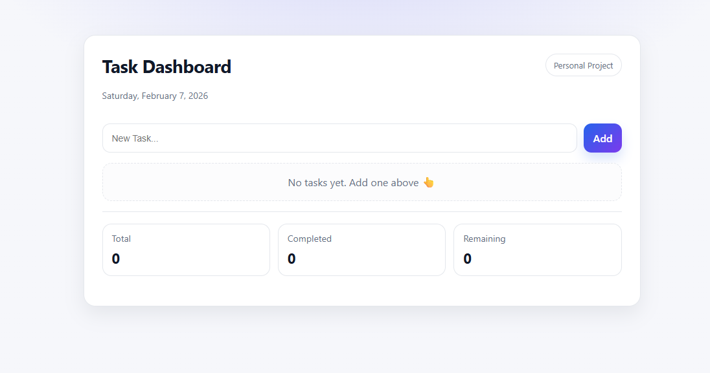
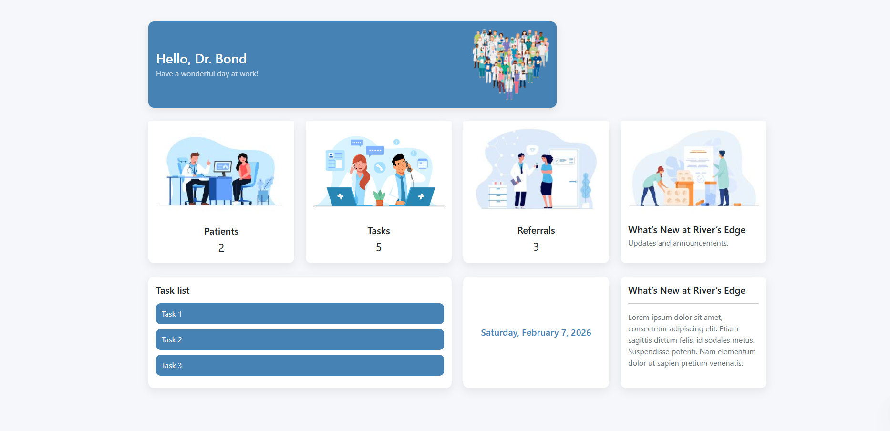

Data exploration
Electric Vehicle Dashboard
Explore Washington State electric vehicle registrations through interactive charts, search filters, and CSV exports.
Explore EV DashboardFrontend Developer & Designer
I'm Chris, a frontend developer and designer focused on creating intuitive, accessible digital experiences.
Selected work
A selection of my development and interface design projects.

Data exploration
Explore Washington State electric vehicle registrations through interactive charts, search filters, and CSV exports.
Explore EV Dashboard
Full-stack development
A task management app with instant interface updates, progress statistics, and persistent storage using PHP and JSON.
View Task Dashboard code
Interface design
A healthcare dashboard interface bringing patient summaries, tasks, referrals, and announcements into one organized view.
View Rivers Edge code